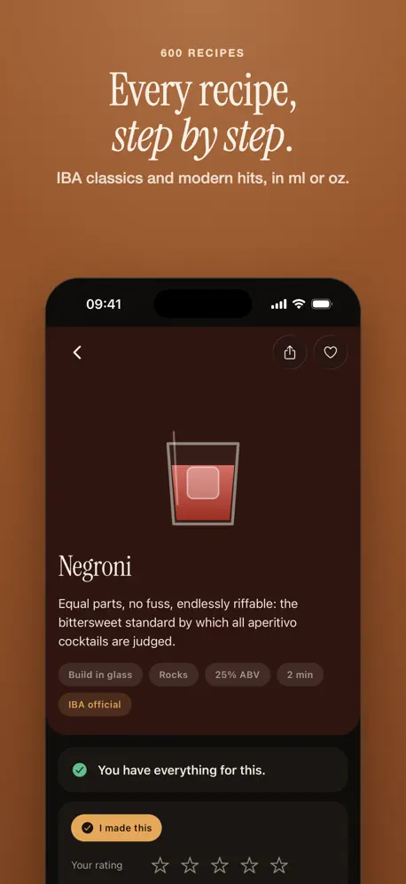
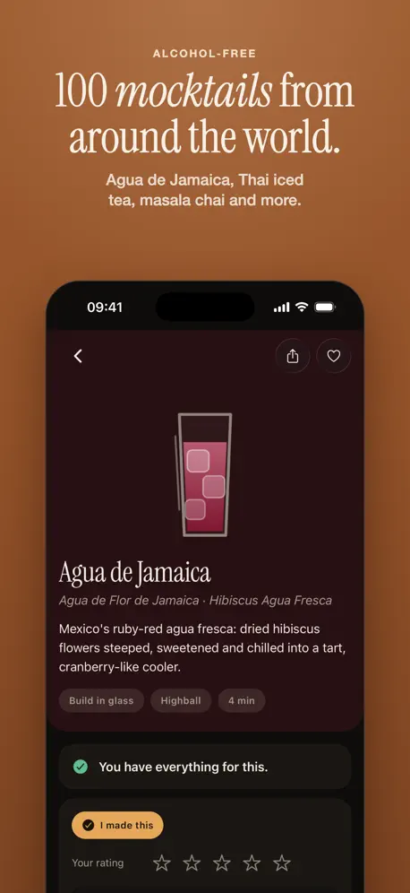

MyApps Studio
MyApps Studio
← All work

Stirred
What can your bar make tonight?
iOSiPadOSFood & Drink
Mark the bottles on your shelf and Stirred shows every cocktail you can make, the drinks you are one bottle away from, and the single bottle that opens up the most new recipes.




What it does
600 tested recipes
Every IBA official cocktail, modern classics and 100 mocktails. Each recipe is checked against two independent published sources.
Smart matching
A bottle of bourbon counts toward any whiskey recipe, and close substitutes are suggested.
Shelf scan
Photograph your bar and the bottles go straight into your inventory.
The next bottle
Ranked by how many new drinks it would open up for you.
How it's built
- Works offline: the full recipe catalog ships inside the app, with no account and no ads.
- Shelf scan runs on a Cloudflare Worker with schema-constrained model output. The model can only name bottles that exist in the catalog.
- Matching rules (parent and child ingredients, substitutes, garnishes) are unit-tested.
- Localized into 31 languages through our Claude Opus i18n pipeline.